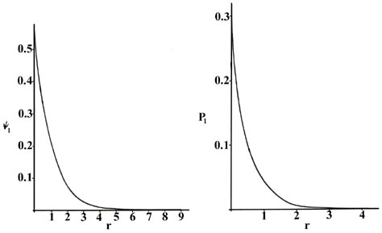
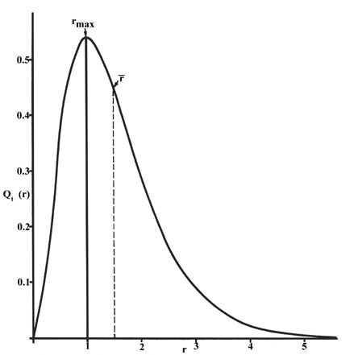
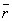
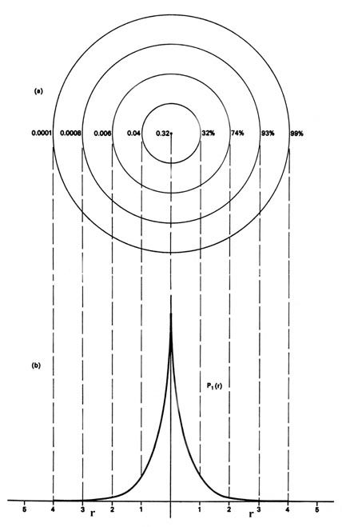
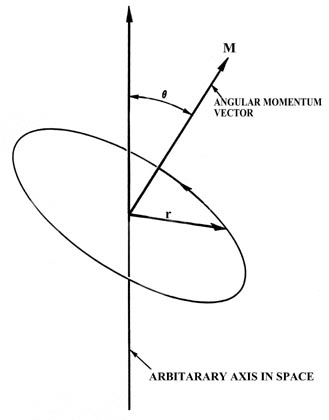
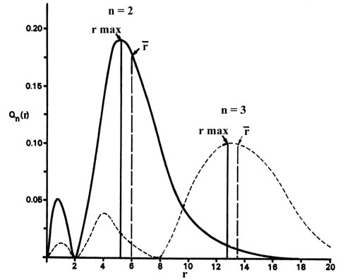
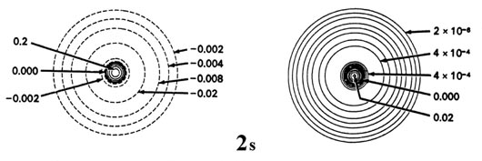
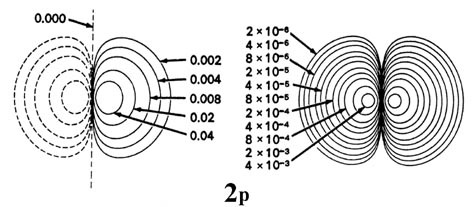
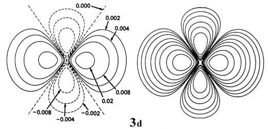
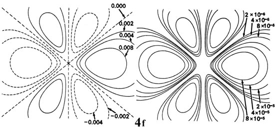

An Introduction to the Electronic Structure of Atoms
and Molecules
Dr. Richard F.W. Bader
Professor of Chemistry / McMaster University / Hamilton,
Ontario
|
The Probability Distributions for the Hydrogen Atom
To what extent will quantum mechanics permit us to pinpoint the position
of an electron when it is bound to an atom? We can obtain an order of magnitude
answer to this question by applying the uncertainty principle
to estimate Dx. The value of Dx
will represent the minimum uncertainty in our knowledge of the position
of the electron. The momentum of an electron in an atom is of the order
of magnitude of 9 ´ 10-19
g cm/sec. The uncertainty in the momentum Dp
must necessarily be of the same order of magnitude. Thus
The uncertainty in the position of the electron is of the same order
of magnitude as the diameter of the atom itself. As long as the electron
is bound to the atom, we will not be able to say much more about its position
than that it is in the atom. Certainly all models of the atom which describe
the electron as a particle following a definite trajectory or orbit must
be discarded.
We can obtain an energy and one or more wave functions
for every value of n, the principal quantum number, by solving Schrödinger's
equation for the hydrogen atom. A knowledge of the wave functions, or probability
amplitudes yn,
allows us to calculate the probability distributions for the electron in
any given quantum level. When n = 1, the wave function and the derived
probability function are independent of direction and depend only on the
distance r between the electron and the nucleus. In Fig.
3-4, we plot both y1
and P1 versus r, showing
the variation in these functions as the electron is moved further and further
from the nucleus in any one direction. (These and all succeeding graphs
are plotted in terms of the atomic unit of length, a0
= 0.529 ´ 10-8
cm.)

Fig. 3-4. The wave function
and probability distribution as functions of r for the n
= 1 level of the H atom. The functions and the radius r are in atomic
units in this and succeeding figures.
Two interpretations can again be given to the P1
curve. An experiment designed to detect the position of the electron with
an uncertainty much less than the diameter of the atom itself (using light
of short wavelength) will, if repeated a large number of times, result
in Fig. 3-4 for P1.
That is, the electron will be detected close to the nucleus most frequently
and the probability of observing it at some distance from the nucleus will
decrease rapidly with increasing r. The atom will be ionized in
making each of these observations because the energy of the photons with
a wavelength much less than 10-8 cm will
be greater than K, the amount of energy required to ionize the hydrogen
atom. If light with a wavelength comparable to the diameter of the atom
is employed in the experiment, then the electron will not be excited but
our knowledge of its position will be correspondingly less precise. In
these experiments, in which the electron's energy is not changed, the electron
will appear to be "smeared out" and we may interpret P1
as giving the fraction of the total electronic charge to be found in every
small volume element of space. (Recall that the addition of the value of
Pn
for every small volume element over all space adds up to unity, i.e., one
electron and one electronic charge.)
When the electron is in a definite energy level we
shall refer to the Pn distributions
as electron density distributions, since they describe the
manner in which the total electronic charge is distributed in space. The
electron density is expressed in terms of the number of electronic charges
per unit volume of space, e-/V. The volume V
is usually expressed in atomic units of length cubed, and one atomic unit
of electron density is then e-/a03.
To give an idea of the order of magnitude of an atomic density unit, 1
au of charge density e-/a03
=
6.7 electronic charges per cubic Ångstrom. That is, a cube with a
length of 0.52917 ´10-8
cm,
if uniformly filled with an electronic charge density of 1 au, would contain
6.7 electronic charges.
P1 may be
represented in another manner. Rather than considering the amount of electronic
charge in one particular small element of space, we may determine the total
amount of charge lying within a thin spherical shell of space. Since the
distribution is independent of direction, consider adding up all the charge
density which lies within a volume of space bounded by an inner sphere
of radius r and an outer concentric sphere with a radius only infinitesimally
greater, say r + Dr. The area
of the inner sphere is 4pr2
and the thickness of the shell is Dr.
Thus the volume of the shell is 4pr2
Dr (Click
here for note.) and the product of this volume and the charge
density P1(r), which is the
charge or number of electrons per unit volume, is therefore the total amount
of electronic charge lying between the spheres of radius
r and r
+ Dr. The product 4pr2Pn
is given a special name, the radial distribution function, which we shall
label Qn(r).
The radial distribution function is plotted in Fig.
3-5 for the ground state of the hydrogen atom.
|  |
Fig. 3-5. The radial distribution
function Q1(r) for an H atom. The value of this
function at some value of r when multiplied by Dr
gives the number of electronic charges within the thin shell of space lying
between spheres of radius r and r + Dr. |
The curve passes through zero at r = 0 since the surface
area of a sphere of zero radius is zero. As the radius of the sphere is
increased, the volume of space defined by 4pr2Dr
increases. However, as shown in Fig 3-4, the absolute
value of the electron density at a given point decreases with r
and the resulting curve must pass through a maximum. This maximum occurs
at rmax = a0.
Thus more of the electronic charge is present at a distance a0,
out from the nucleus than at any other value of r. Since the curve
is unsymmetrical, the average value of r, denoted by ,
is not equal to rmax. The average
value of r is indicated on the figure by a dashed line. A "picture"
of the electron density distribution for the electron in the n =
1 level of the hydrogen atom would be a spherical ball of charge, dense
around the nucleus and becoming increasingly diffuse as the value of
r is increased.
We could also represent the distribution of negative
charge in the hydrogen atom in the manner used previously for the electron
confined to move on a plane, Fig.
2-4, by displaying the charge density in a plane by means of
a contour map. Imagine a plane through the atom including the nucleus.
The density is calculated at every point in this plane. All points having
the same value for the electron density in this plane are joined by a contour
line (Fig. 3-6). Since
the electron density depends only on r, the distance from the nucleus,
and not on the direction in space, the contours will be circular. A contour
map is useful as it indicates the "shape" of the density distribution.
|  |
Fig. 3-6. (a) A contour map of the electron
density distribution in a plane containing the nucleus for the n
= 1 level of the H atom. The distance between adjacent contours is 1 au.
The numbers on the left-hand side on each contour give the electron densityin
au. The numbers on the right-hand side give the fraction of the total electronic
charge which lies within a sphere of that radius. Thus 99% of the
single electronic charge of the H atom lies within a sphere of radius 4
au (or diameter = 4.2 ´10-8
cm).
(b) This is a profile of the contour map along a line
through the nucleus. It is, of course, the same as that given previously
in Fig. 3-4 for P1,
but now plotted from the nucleus in both directions. |
This completes the description of the most stable state of the hydrogen
atom, the state for which n = 1. Before proceeding with a discussion
of the excited states of the hydrogen atom we must introduce a new term.
When the energy of the electron is increased to another of the allowed
values, corresponding to a new value for n, yn
and Pn change as well. The wave functions yn
for the hydrogen atom are given a special name, atomic orbitals,
because they play such an important role in all of our future discussions
of the electronic structure of atoms. In general the word orbital is the
name given to a wave function which determines the motion of a single electron.
If the one-electron wave function is for an atomic system, it is called
an atomic orbital. (Click
here for note.)
For every value of the energy En,
for the hydrogen atom, there is a degeneracy equal to n2.
Therefore, for n = 1, there is but one atomic orbital and one electron
density distribution. However, for n = 2, there are four different
atomic orbitals and four different electron density distributions, all
of which possess the same value for the energy, E2.
Thus for all values of the principal quantum number n there are
n2
different ways in which the electronic charge may be distributed in three-dimensional
space and still possess the same value for the energy. For every value
of the principal quantum number, one of the possible atomic
orbitals is independent of direction and gives a spherical electron density
distribution which can be represented by circular contours as has been
exemplified above for the case of n = 1. The other atomic orbitals
for a given value of
n exhibit a directional dependence and predict
density distributions which are not spherical but are concentrated in planes
or along certain axes. The angular dependence of the atomic orbitals for
the hydrogen atom and the shapes of the contours of the corresponding electron
density distributions are intimately connected with the angular momentum
possessed by the electron.
The physical quantity known as angular momentum plays
a dominant role in the understanding of the electronic structure of atoms.
To gain a physical picture and feeling for the angular momentum it is necessary
to consider a model system from the classical point of view. The simplest
classical model of the hydrogen atom is one in which the electron moves
in a circular orbit with a constant speed or angular velocity (Fig.
3-7). Just as the ordinary momentum mv plays a
dominant role in the analysis of straight line or linear motion, so angular
momentum plays the central role in the analysis of a system with circular
motion as found in the model of the hydrogen atom.

Fig. 3-7. The angular momentum vector for a classical
model of the atom.
In Fig. 3-7, m
is the mass of the electron, v is the linear velocity (the velocity
the electron would possess if it continued moving at a tangent to the orbit
as indicated in the figure) and r is the radius of the orbit. The
linear velocity v is a vector since it possesses at any instant
both a magnitude and a direction in space. Obviously, as the electron rotates
in the orbit the direction of v is constantly changing, and thus
the linear momentum mv is not constant for
the circular motion. This is so even though the speed of the electron (the
magnitude of v which is denoted by u)
remains unchanged. According to Newton's second law, a force must be acting
on the electron if its momentum changes with time. This is the force which
prevents the electron from flying on tangent to its orbit. In an atom the
attractive force which contains the electron is the electrostatic force
of attraction between the nucleus and the electron, directed along the
radius r at right angles to the direction of the electron's motion.
The angular momentum, like the linear momentum, is
a vector and is defined as follows:
The angular momentum vector M is directed along the axis of rotation.
From the definition it is evident that the angular momentum vector will
remain constant as long as the speed of the electron in the orbit is constant
(u remains unchanged) and the plane and
radius of the orbit remain unchanged. Thus for a given orbit, the angular
momentum is constant as long as the angular velocity of the particle in
the orbit is constant. In an atom the only force on the electron in the
orbit is directed along r; it has no component in the direction
of the motion. The force acts in such a way as to change only the linear
momentum. Therefore, while the linear momentum is not constant during the
circular motion, the angular momentum is. A force exerted on the particle
in the direction of the vector v would change the angular velocity
and the angular momentum. When a force is applied which does change M,
a torque is said to be acting on the system. Thus angular
momentum and torque are related in the same way as are linear momentum
and force.
The important point of the above discussion is that
both the angular momentum and the energy of an atom remain constant if
the atom is left undisturbed. Any physical quantity which is constant
in a classical system is both conserved and quantized in a quantum mechanical
system. Thus both the energy and the angular momentum are quantized
for an atom.
There is a quantum number, denoted by l, which governs the magnitude
of the angular momentum, just as the quantum number n determines
the energy. The magnitude of the angular momentum may assume
only those values given by:
Furthermore, the value of n limits the maximum value of the angular
momentum as the value of l cannot be greater than n - 1.
For the state n = 1 discussed above, l may have the value
of zero only. When n = 2, l may equal 0 or 1, and for n
= 3, l = 0 or 1 or 2, etc. When l = 0, it is evident from
equation (4) that the angular momentum
of the electron is zero. The atomic orbitals which describe these states
of zero angular momentum are called s orbitals. The s orbitals
are distinguished from one another by stating the value of n, the
principal quantum number. They are referred to as the 1s, 2s,
3s, etc., atomic orbitals.
The preceding discussion referred to the 1s
orbital since for the ground state of the hydrogen atom n = 1 and
l
= 0. This orbital, and all s orbitals in general, predict spherical
density distributions for the electron as exemplified by Fig.
3-5 for the 1s density. Figure
3-8 shows the radial distribution functions Q(r)
which apply when the electron is in a 2s or 3s orbital to
illustrate how the character of the density distributions change as the
value of n is increased. (Click
here for note.)

Fig. 3-8. Radial distribution functions for the
2s and 3s density distributions.
Comparing these results with those for the 1s orbital in Fig.
3-5 we see that as n increases the average value of r
increases. This agrees with the fact that the energy of the electron also
increases as n increases. The increased energy results in the electron
being on the average pulled further away from the attractive force of the
nucleus. As in the simple example of an electron moving on a line, nodes
(values of r for which the electron density is zero) appear in the
probability distributions. The number of nodes increases with increasing
energy and equals n - 1.
When the electron possesses angular momentum the density distributions
are no longer spherical. In fact for each value of l, the electron
density distribution assumes a characteristic shape (Fig.
3-9).




Fig. 3-9. Contour maps of the 2s, 2p,
3d and 4f atomic orbitals and their charge density distributions
for the H atom. The zero contours shown in the maps for the orbitals define
the positions of the nodes. Negative values for the contours of the orbitals
are indicated by dashed lines, positive values by solid lines.
When l = 1, the orbitals are called p orbitals. In this
case the orbital and its electron density are concentrated along a line
(axis) in space. The 2p orbital or wave function is positive in
value on one side and negative in value on the other side of a plane which
is perpendicular to the axis of the orbital and passes through the nucleus.
The orbital has a node in this plane, and consequently an electron in a
2p orbital does not place any electronic charge density at the nucleus.
The electron density of a 1s orbital, on the other hand, is a maximum
at the nucleus. The same diagram for the 2p density distribution
is obtained for any plane which contains this axis. Thus in three dimensions
the electron density would appear to be concentrated in two lobes, one
on each side of the nucleus, each lobe being circular in cross section
(Fig.
3-10).

Fig. 3-10. The appearance of the 2p electron
density distribution in three-dimensional space.
When l = 2, the orbitals are called d orbitals and Fig.
3-9 shows the contours in a plane for a 3d orbital and
its density distribution. Notice that the density is again zero at the
nucleus and that there are now two nodes in the orbital and in its density
distribution. As a final example, Fig.
3-9 shows the contours of the orbital and electron density distribution
obtained for a 4f atomic orbital which occurs when n = 4
and l = 3. (Click
here for note.) The point to notice is that as the angular momentum
of the electron increases, the density distribution becomes increasingly
concentrated along an axis or in a plane in space. Only electrons in s
orbitals with zero angular momentum give spherical density distributions
and in addition place charge density at the position of the nucleus.
We have not as yet accounted for the full degeneracy
of the hydrogen atom orbitals which we stated earlier to be n2
for every value of n. For example, when n = 2, there are
four distinct atomic orbitals. The remaining degeneracy is again determined
by the angular momentum of the system. Since angular momentum like linear
momentum is a vector quantity, we may refer to the component of the angular
momentum vector which lies along some chosen axis. For reasons we shall
investigate, the number of values a particular component can assume for
a given value of l is (2l + 1). Thus when l = 0, there
is no angular momentum and there is but a single orbital, an s orbital.
When l = 1, there are three possible values for the component (2´
1 + 1) of the total angular momentum which are physically distinguishable
from one another. There are, therefore, three p orbitals. Similarly
there are five d orbitals, (2
´
2+1), seven f orbitals, (2 ´ 3
+1), etc. All of the orbitals with the same value of n and l,
the three 2p orbitals for example, are similar but differ in their
spatial orientations.
To gain a better understanding of this final element of degeneracy,
we must consider in more detail what quantum mechanics predicts concerning
the angular momentum of an electron in an atom.